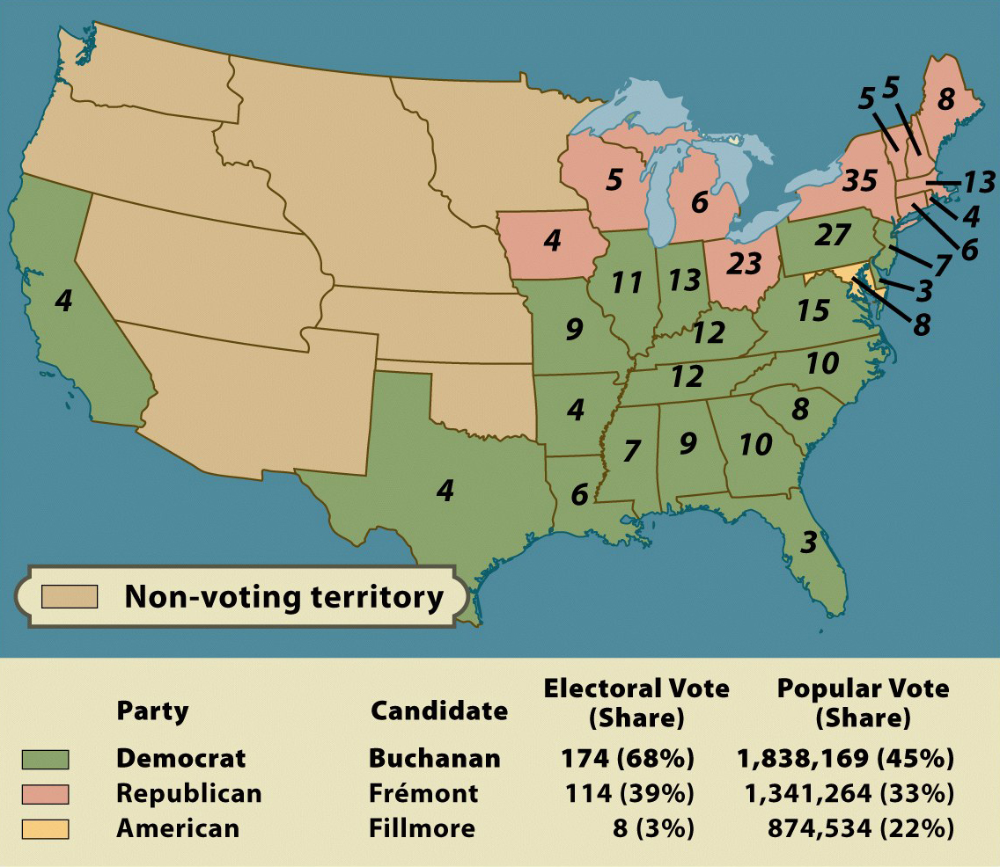

The Election of 1856

From the 1830s through the mid-1850s, the United States' two main political parties
were the Democrats and the Whigs. Debates over the issue of slavery destroyed the Whigs,
however, and paved the way for the rise of the new national party. One alternative was the
American Party (also known as the Know-Nothing Party), which was primarily identified with
hostility to immigrants. The other was the Republican Party, formed in 1854. A coalition
of different and sometimes competing interests, the Republican Party was primarily
identified with opposition to the further expansion of slavery (known as the "free soil"
position).
The presidential election of 1856, which pitted popular explorer and folk hero
John C. Frémont (Republican) against career politician James Buchanan (Democrat)
was highly suggestive of what lie ahead. First, it was clear that the American Party was
not viable; they would not field a presidential candidate again. Second, though the
Republicans were only two years old and had nominated an inexperienced candidate, they
made an impressive showing and would undoubtedly be a force to reckoned with in 1860.
Third, though the Democrats had an existing and well-established political machinery and a
highly experienced candidate, their win was tenuous. The loss of Pennsylvania (Buchanan's
home state) and any other state (except 3-electoral vote Delaware) would have handed the
election to the Republicans.
Note: Click on the image for a larger version.
Source: Eric Foner, Give Me Liberty! An American History (New York: W. W. Norton & Company, 2008).
|

{kind=link}